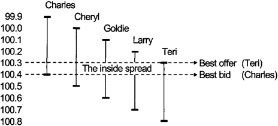
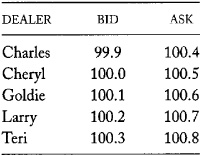
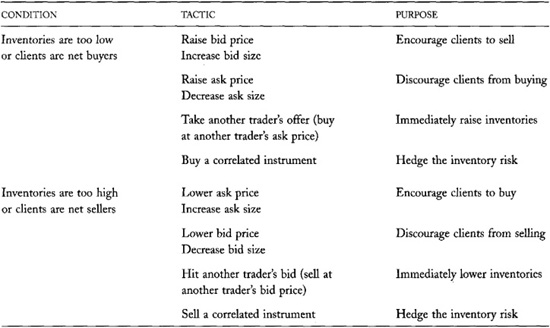
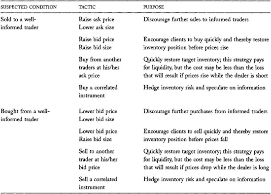
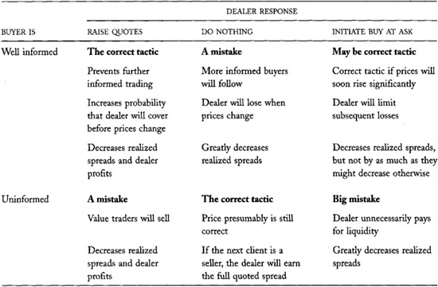

Chapter 13: Dealers
Dealers are merchants who make money by buying low and selling high. What you already know about merchants will help you understand how dealers in the financial markets trade profitably.
Merchants may be dealers or distributors. Dealers buy from, and sell to, their clients. Distributors buy from their suppliers and sell to their clients. (In practice, many distributors are also commonly known as dealers. Consider, for example, new car dealers.) Traders act as dealers when they make a market in seasoned securities or in contracts. They act as distributors when they help firms sell new securities or when they help a client sell a large block of securities.
All dealers face the same problems regardless of what they trade. They must set prices, they must market their services to acquire clients, they must manage their inventories, and they must be careful that they do not trade with better-informed traders. The relative importance of these problems varies by what the dealers trade.
Dealers in the financial markets supply liquidity to their clients who want to buy and sell trading instruments. They allow people to trade when they want to trade. They buy when their clients want to sell, and they sell when their clients want to buy.
Dealers make money by buying at low prices and selling at high prices. They lose money when market conditions force them to sell at low prices or buy at high prices. These losses often occur after they trade with informed traders.
When dealers purchase something, they usually do not know to whom they will sell it or at what price they will sell it. If the price drops before they can sell the item, they lose money. Likewise, when they sell something, they usually do not know the price that they will pay to repurchase it. These unknowns make being a dealer challenging, exciting, and very risky. Dealers assume significant risks when they trade.
Dealers are passive traders. Passive traders trade when other traders want to trade. Since passive traders do not control the timing of their trades, they must be very careful about how they offer to trade and to whom they offer to trade. They must ensure that when they do trade, their trades benefit them and not just their clients. Dealers must be especially vigilant to avoid losing to informed traders and bluffers.
In this chapter, we will examine the principles by which dealers conduct their businesses. You will learn how dealers set their quotes, how they manage their inventories, how they respond to informed traders, and how they learn about the values of the instruments that they trade. The principles that we will discuss apply to all dealers, whether they trade securities, commodities, or retail goods. If you are---or intend to be---a dealer, understanding these principles will help you maximize your trading profits.
Even if you have no interest in being a dealer, you must understand how dealers behave in order to trade successfully in financial markets. Whether you trade with dealers or compete with them to offer liquidity, their trading decisions affect you. In particular, you must consider how dealers trade when you decide whether to take or offer liquidity.
In markets where dealers are the primary suppliers of liquidity, the cost of liquidity depends on the factors that determine dealer profits. If you are interested in market liquidity, you must understand how dealers trade and when they are profitable.
We start this chapter with introductory discussions about who dealers are, how traders negotiate with dealers, and how dealers attract order flow. We then consider how dealers control their inventories and how they set their prices. The chapter closes by examining how dealers relate to value traders and to bluffers.
13.1 WHO ARE DEALERS?
Dealers are profit-motivated traders who allow other traders to trade when they want to trade. The liquidity service they sell---immediacy---is valuable to impatient traders. Dealers profit when they buy from impatient sellers at low prices and sell to impatient buyers at high prices. The difference in prices compensates them for providing immediacy.
Many dealers are professional traders who work on the floors of exchanges or in the offices of trading firms. These professionals sometimes use computer systems to support their dealing or to implement their trading strategies.
Other dealers are individuals who access the markets through their brokers, often via Internet order entry systems. Such traders generally supply immediacy by issuing limit orders. These individuals often do not recognize that they are acting as dealers. They consequently do not always fully appreciate the risks that they face and the circumstances under which they will lose or profit.
Many markets officially register some traders as dealers. In exchange for special privileges, these markets may require that their registered dealers supply liquidity. We discuss these arrangements in chapter 24.
Dealers often are known by other names. At futures exchanges, dealers are often called scalpers, day traders, locals, or market makers. At many stock exchanges and options exchanges, they are known as specialists or market makers.
Many dealers are also brokers. We discuss brokers and the dual trading problem that broker-dealers present in chapter 7.
In addition to offering liquidity to other traders, many dealers speculate. Dealers sometimes can predict future price changes by inferring why traders demand to trade. They also can use quote-matching strategies to capture the option values of limit orders that they see. In many actively traded markets, competition among dealers may be so intense that they cannot profit only by providing liquidity to customers. In such markets, dealers must speculate successfully to stay in business. Such dealers are sometimes called position traders as opposed to spread traders. Spread traders profit exclusively from buying at the bid and selling at the ask.
In this chapter, we consider only how dealers supply liquidity. Although we discuss how dealers infer information from the order flow, and how they react to it, we do not consider how they may speculate on it. Chapters 10 and 11 examine the speculative trading strategies that dealers most often employ.
Example of a Small Realized Spread
Dell is a dealer who is bidding 35.0 and offering 35.3 for a security. A client arrives and sells at Dell's bid of 35.0. Dell now needs to sell the security to restore her former position.
Bad news about the fundamental value of the security subsequently arrives. To avoid buying from well-informed traders, Dell must lower her bid to 34.6. To encourage traders to buy from her so that she can sell the security, she must lower her ask to 34.9.
A buyer arrives and buys from Dell at 34.9. Although Dell's quoted bid/ask spread before both trades was 0.3, the realized spread for her round-trip buy and sell was -0.1 = 34.9 - 35.0. Dell lost money because she was holding the stock when its value dropped.
Because dealing can be quite risky, successful dealers tend to be traders who tolerate risks well. They generally do not enjoy bearing them, however. The risks of dealing are serious and scary. Many dealers have gone bankrupt because they assumed risks that did not work out. Dealers constantly think about the risks that they bear and how to avoid them. Since bearing risk is unpleasant, dealers demand appropriate compensation when forced to bear large risks.
13.2 DEALER QUOTATIONS
The prices at which dealers are willing to buy and sell are their bid and ask prices. Dealers usually quote these prices to their clients before they trade. Dealers bid to buy at their bid prices and offer to sell at their ask prices. Sellers receive bid prices when they sell to dealers, and buyers pay ask prices when they buy from dealers. Ask prices are also known as offering prices.
Traders who want to buy from a trader who is offering to sell take the offer. Traders who want to sell to a trader who is offering to buy hit the bid.
Dealers always set their ask prices above their bid prices. The difference between the ask and the bid is the bid/ask spread. When the ask is close to the bid, the spread is narrow or tight. When the ask is much higher than the bid, the spread is wide.
Dealers make money by buying low at their bid prices and selling high at their ask prices. This strategy is profitable if dealers can fill orders on both sides of the market without changing their prices. In practice, this strategy is quite difficult to implement profitably because dealers rarely receive buy and sell orders in equal volumes, and because unforeseen price changes are very common.
The realized spreads that dealers earn are often smaller than their quoted spreads. The realized spread is the difference between the prices at which dealers actually buy and sell. Realized spreads are usually smaller than quoted spreads because dealers occasionally trade at better prices than they quote and because they often adjust their bid and ask prices between trades.
Dealers who quote both bid and ask prices quote a two-sided market. Their quotes make a market. Those who quote only one side quote a onesided market. Although most dealers will quote a two-sided market, they usually aggressively price only the side on which they would prefer to trade. For example, dealers who want to buy usually quote high (aggressive) bid prices to encourage sellers to sell to them. They also quote high uncompetitive ask prices to discourage buyers from buying from them. Dealers who want to sell quote low bid and ask prices.
The inside spread is the difference between the highest bid and the lowest ask. The inside spread usually is much narrower than the average dealer spread. By definition, it can be no wider than the narrowest individual dealer spread.
The quotes that dealers offer are either firm or soft. Dealers who offer firm quotes must trade at their quoted prices, which are known as firm prices. Firm quotes are good only up to some maximum quantity that the dealer specifies. Dealers who offer soft quotes can revise their prices when asked to trade, or they can even refuse to trade. A soft quote is simply an indication of interest. Dealers who do not honor their indications risk alienating their customers.
FIGURE 13-1.\ The Inside Spread in RobertsonBooks.com

Depending on the market, dealers may provide their quotes only on request, or they may quote continuous firm two-sided markets. Dealers in most corporate bond markets, and in some foreign exchange markets, quote only on request. Most organized quote-driven stock markets require that their registered dealers quote firm two-sided markets. For example, dealers in the Nasdaq Stock Market must continuously post firm prices at which they will trade.
The Inside Spread
Charles, Cheryl, Goldie, Larry, and Teri are dealers in RobertsonBooks.com. Each quotes a two-sided market. Their quotes appear in table 13-1. Although each dealer's bid/ask spread is 50 cents, the inside bid/ask spread is only 10 cents. Teri is the best bidder at 100.3 and Charles has the best offer at 100.4. Figure 13-1 illustrates how the inside spread is composed from dealer quotations.
TABLE 13-1.\ Dealer Quotes in RoberstonBooks.com

Warm Quotes in Oral Markets
Futures traders say that the bids and offers they shout out in oral markets are good "only for as long as the breath is warm." Traders who want to hit a bid or take an offer must do so immediately after the bid or offer is made.
When dealers quote only on request, their quotes are good only for some limited time. Customers must either trade while the quote is good or ask later for a new quote. They cannot assume that the dealer will continue to offer the same prices. The length of time that a quote is good depends on the rules or conventions of the market. In general, quotes expire quickly in actively traded markets with volatile prices or narrow spreads.
Dealers also quote sizes when they make firm quotes. Their bid sizes and ask sizes are the maximum quantities they must buy or sell when they make firm bids and offers. Upon request, dealers often agree to trade larger sizes at their quoted prices.
13.3 TRADING WITH DEALERS
Dealers frequently will trade at better prices than they quote to the public. Traders therefore often negotiate for the best possible price. Dealers may offer better prices to their smaller customers, to their more active customers, and to customers they believe are not well informed about fundamental values.
Many institutional traders negotiate directly with dealers without the intervention of a broker. Dealers usually do not charge these clients commissions to trade. Instead, they incorporate any fees for trading into their bid and ask prices. The resulting trades are on a net price basis.
Most retail traders and many institutional traders use brokers as intermediaries when trading in dealer markets. The brokers' job is to obtain the best possible price. For small orders, however, the benefits of actively negotiating prices are usually smaller than the costs of doing so. In such instances, brokers will route their orders to dealers they believe most often offer the best combination of price and service. If their preferred dealers are not currently quoting the best price in the market, the brokers will insist that the dealers fill their clients' orders at the best quoted price. In some markets, brokers may occasionally expect to receive better prices. Orders that receive better than quoted prices receive price improvement.
When a broker sends an order to a specific dealer, the broker preferences the order to that dealer. In many markets, preferencing arrangements among brokers and dealers are quite common. Nasdaq is an example of such a market. By forming stable relationships, brokers and dealers often can lower the total costs of trading. Wholesalers are dealers who trade primarily with traders introduced by retail brokers. Wholesalers usually have preferencing relationships with many brokers. Preferencing raises important regulatory problems that we consider in chapter 25.
When experienced traders negotiate prices with dealers, they usually ask for a two-sided quote before they say whether they want to buy or sell. If the quoted spread is too wide, they may seek another dealer or refuse to trade. This strategy discourages dealers from quoting excessively high prices to buyers and excessively low prices to sellers. It is especially important in markets with few dealers because their limited competition may not provide adequate discipline against the exploitation of traders who are known to be buyers or sellers. In markets with many dealers, those who try to exploit known buyers and sellers lose their customers to dealers who quote better prices.
13.4 ATTRACTING ORDER FLOW
Dealers must attract order flow in order to trade profitably. A dealer's order flow is the stream of requests to trade that other traders make of the dealer. Dealers attract order flow by quoting aggressive prices and large sizes, providing high-quality service at low prices, advertising, creating marketing relationships, and purchasing it.
In many markets, dealers primarily attract order flow by quoting aggressive prices. Impatient buyers naturally look for the lowest ask prices, and impatient sellers look for the highest bid prices. Dealers who quote the best prices often get the orders.
Dealers also may obtain order flow by showing that they are willing to trade large sizes. Traders who want to trade large size generally prefer to trade with dealers who will commit to trading large size.
In markets where quotes are not publicly exposed, or where price improvement is common, dealers attract order flow by cultivating a reputation for providing good prices, good service, and large sizes. They acquire such reputations by consistently satisfying their clients. Dealers also may market their businesses by collecting and disseminating statistical evidence that documents the quality of their services.
In some markets, dealers actively advertise to acquire order flow. They design their marketing to promote their image, to provide information about their services, and to document the quality of their services. When clients choose the dealers with whom they trade, advertising is particularly important. When brokers choose the dealers with whom their clients trade, advertising may be less important.
Dealers also acquire order flow by cultivating relationships with clients who can send them orders. These clients are typically brokers and large institutional traders. Many dealers commonly provide their clients with market information in an attempt to attract their orders. They also may provide market research, training, electronic order-routing systems, accounting systems, and electronic information systems to develop their relationships. Many dealers also entertain their clients extensively. They take their clients to dinner, to the theater, and often to major sports events like the Super Bowl, the NBA finals, the NCAA basketball Final Four, and the World Series.
Finally, some dealers acquire order flow by buying orders from brokers who collect them. Payment for order flow arrangements are common in some stock markets. The dealers who pay for order flow typically only buy market orders. In the U.S. markets, the payments currently average less than 1 cent per share. In the past, they have been as high as 3 cents per share for certain stocks. Sometimes arrangements involve nonpecuniary payments of services, or reciprocal exchanges of order flows among broker-dealers. Payment for order flow raises difficult regulatory issues that we address in chapter 25, where we discuss internalization and preferencing.
13.5 DEALER QUOTATION DECISIONS
The most important decisions that dealers make concern their quotations. They must decide where to place their bid and offer prices, what the spread between them should be, and what sizes they will trade at their bid and offer. The remainder of this chapter considers how dealers decide where to place their quotes. Chapter 14 considers how dealers set their spreads.
Where dealers set their bid and ask prices is the most important and most difficult decision they make. When dealers set their prices poorly, they tend to buy and later wish that they had sold, or sell and later wish that they had bought. Dealers therefore pay very close attention to these decisions. We shall see that dealers set their quotes to control their inventories and to avoid losses to informed traders.
Imagine Being Fired for Not Spending Your Expense Account!
Some firms partly measure the marketing efforts of their dealers and brokers by how much they spend in their expense accounts. These firms assume that employees who do not spend "enough" are not doing enough to cultivate their businesses.
Though it seems remarkable that people would need to be encouraged to spend their expense accounts, many traders tire of the constant entertaining they must do. When entertaining is essential to business development, young unmarried traders often have an advantage over married traders who want to be with their families in the evenings and on weekends.
13.6 DEALER INVENTORIES
The positions that dealers have in the instruments they trade are their inventories. These positions may be long or short. Dealer inventories rise when they buy more than they sell, and they fall when they sell more than they buy. Since dealers allow their customers to determine the side on which they trade, dealer inventories fluctuate in response to the demands of their customers. Dealer inventories drop when traders buy from dealers, and they rise when traders sell to dealers.
Target inventories are the positions that dealers want to hold. Dealer inventories are in balance when they are near their target levels and out of balance otherwise. A dealer's inventory imbalance is the difference between his actual inventory position and his target inventory position.
If short and long positions are equally costly to create and hold, the target inventories of dealers who do not also speculate, hedge, or invest are zero. Dealers who hold no inventory avoid the costs of financing their positions, and they do not lose when prices move against their positions. In some markets, selling from a short position often costs more than selling from a long position, and holding a short position often costs more than holding a long position. In such markets, dealers try to hold positive inventories in order to avoid these higher costs.
Dealers who speculate, hedge, or invest have target inventories that reflect these objectives. For example, the target inventories of dealers who also speculate are long when they think their instruments are undervalued or when they anticipate excess demand.
If dealers allow their inventories to get too far out of balance, they will not have enough capital to finance their purchases or secure their short sales. At that point, whoever clears their trades will force them to liquidate. If they have lost money, they may go bankrupt.
13.6.1 How Dealers Control Their Inventories
Dealers must control their inventories to keep them in balance. They must buy when their inventories are below their targets and sell when their inventories are above their targets.
Dealers control their inventories primarily by influencing the buying and selling decisions of their clients. When dealers want to decrease their inventories, they lower their bid and ask prices. Lower ask prices encourage traders to buy from them, which would decrease their inventories. Lower bid prices discourage traders from selling more to them, which would increase their inventories. Dealers also may increase their bid sizes, and lower their ask sizes, to decrease their inventories. Greater bid sizes encourage large traders to sell to them and smaller ask sizes discourage large traders from buying from them. When dealers want to increase their inventories, they raise their bid and ask prices, increase their bid sizes, and decrease their ask sizes. Higher bid prices and larger bid sizes encourage traders to sell to them. Higher ask prices and smaller ask sizes discourage traders from buying from them.
Dealers who want to adjust their inventories quickly may not be willing to wait for another trader to come to them. Instead, they may initiate a trade with another trader who is offering to trade. This tactic quickly solves the inventory problem, but it is expensive. Dealers who demand liquidity from other traders typically buy at the ask price and sell at the bid price; thus their realized spreads will be negative.
Dealers must control their inventories in order to trade profitably. Large positions are expensive to finance. They also expose dealers to serious losses if prices move against them. Economists call this risk inventory risk. Traders must control their inventories to avoid inventory risk.
When dealer inventories are in balance, dealers want to buy and sell in equal quantities so that their inventories remain near their target levels. A two-sided order flow includes a mix of buyers and sellers who want to trade equal quantities. Dealers try to set their prices to obtain two-sided order flows.
The search for prices that produce a two-sided order flow is called the price discovery process. Dealers try to discover the prices which ensure that buying and selling quantities are just in balance. At these prices, supply equals demand. Prices that balance supply and demand determine market values. Dealers try to discover market values.
Dealing is most profitable when dealers can sell immediately after buying and buy immediately after selling. Dealers profit from these round-trip transactions if they can buy at lower prices than those at which they can sell. Dealers who can quickly rebalance their inventories minimize the probability that prices will move against their positions while their inventories are out of balance. Table 13-2 summarizes the strategies that dealers use to manage their inventories and order flows.
TABLE 13-2.\ Tactics Dealers Use to Manage Their Inventories and Order Flows

13.7 INVENTORY RISK
Dealers face two types of inventory risk. The risks differ according to whether future price changes are correlated with their inventory imbalances. If future price changes are independent of their inventory imbalances, the risk is a diversifiable inventory risk. If they are inversely correlated, the risk is an adverse selection risk.
13.7.1 Diversifiable Inventory Risk
Diversifiable inventory risks are due to events that cause price changes no one can predict. Such price changes are sometimes positive and sometimes negative. On average, they are zero. Otherwise, they would be predictable.
Diversifiable inventory risks are benign compared to adverse selection risk. Although dealers lose when prices unexpectedly move against their positions, they gain when prices unexpectedly move in their favor. Since the price changes are uncorrelated with their inventory imbalances, dealers gain and lose with equal probabilities. Diversifiable risks make dealing a scary business, but they do not cause dealers to lose in the long run.
Diversifiable risks are diversifiable because dealers can minimize their total inventory risk by dealing in many instruments. Unexpected gains in some instruments often offset unexpected losses in other instruments. The variation in total dealer profitability due to diversifiable inventory risk therefore is a lower fraction of their expected dealing profits than it would be if they traded only one security. Firms often deal in hundreds or thousands of instruments in order to diversify their exposure to diversifiable inventory risks.
13.7.2 Adverse Selection Risk
Dealers face adverse selection risk when they trade with informed traders. This risk is not benign. Dealers---like all traders---lose money when they trade with better-informed traders.
Informed traders buy when they think that prices will rise and sell otherwise. If they are correct, they profit, and whoever is on the other side of their trades loses. When dealers trade with informed traders, prices tend to fall after the dealers buy and rise after the dealers sell. These price changes make it difficult for dealers to complete profitable round-trip trades. When dealers trade with informed traders, their realized spreads are often small or negative. Dealers therefore must be very careful when trading with traders they suspect are well informed.
Since informed traders trade only on the side of the market that their information favors, they make order flows one-sided when they trade. Informed trading therefore causes dealer inventories to diverge from their target values. If prices change to reflect the informed traders' information before the dealers can restore their target inventories, the dealers will lose. Economists call these losses adverse selection losses because informed traders select the side of the market that is adverse to the dealers' profits.
Adverse selection from informed traders causes dealer inventory imbalances to be inversely correlated with future price changes. When informed traders buy, dealer inventories fall short of their targets, and prices subsequently rise. When informed traders sell, dealer inventories exceed their targets, and prices rise.
Dealers avoid adverse selection risk only by avoiding informed traders. The best way they can avoid informed traders is to set their quotes near fundamental values so that informed traders will not want to trade.
13.7.3 Market Values Versus Fundamental Values
Dealers avoid both types of inventory risk---diversifiable and adverse selection---when they keep their inventories under control. They usually do not care whether they trade with informed traders or uninformed traders as long as they can quickly restore their target inventories. Most dealers therefore devote much more attention to discovering the market values that produce two-sided order flows than to discovering fundamental values.
Many dealers are uncomfortable with academic arguments that explain their behavior in terms of asymmetrically informed traders. These dealers generally do not know much about fundamental values, they care even less about them, and they may not even believe that they exist. They are simply interested in discovering market values. These same dealers, however, will readily acknowledge that some traders are right more often than not, and that they trade more effectively when they are aware of such traders. However expressed, adverse selection is the most important determinant of dealer profitability.
The remainder of this chapter discusses how dealers respond to adverse selection from informed traders. We focus closely on adverse selection because informed trading is the most important---and most dangerous---cause of one-sided order flows. Dealers must have a thorough understanding of informed trading to best discover market values and avoid substantial losses. Dealers generally discover fundamental values as a by-product of their search for market values.
13.8 DEALER RESPONSES TO ADVERSE SELECTION
Successful dealers must confront the informed trader problem continuously. They must respond appropriately when they suspect that they have traded with an informed trader. They must quote properly when they expect that they may trade with an informed trader. Perhaps most obviously, they must try to avoid trading with informed traders. This section describes how dealers address these three objectives.
13.8.1 What Dealers Do When They Trade with Informed Traders
Dealers who suspect that they have traded with an informed trader must adjust their quotes to avoid further losses. If they do not adjust their quotes, informed traders will continue to trade with them, their order flow will remain unbalanced, and their inventory situation will worsen.
Dealers also must adjust their quotes to cover their positions quickly, before prices move against them. If they can rebalance their inventories before prices change, they will avoid losing when prices change. The traders to whom they unload their positions will lose instead.
When dealers suspect that they have bought from a well-informed seller, they must lower their bid and ask prices. They lower their bid prices to discourage informed traders from selling more to them. They lower their ask prices to encourage other traders to buy their inventory so that they can get back into balance before prices drop.
Likewise, when dealers suspect that they have sold to a well-informed buyer, they must raise their bid and ask prices. They raise their ask prices to discourage informed traders from buying more from them. They raise their bid prices to encourage other traders to sell to them so that they can replenish their inventories before prices rise.
Dealers who are especially concerned about holding positions that they do not like will quickly try to pass them to someone else. Instead of passively waiting until someone wants to take their positions, they actively put them to other traders by buying at the ask or selling at the bid. Although these trades are expensive, they allow dealers to quickly divest themselves of risks that they are unwilling to bear.
Table 13-3 presents the tactics that dealers can use when they suspect they have traded with a well-informed trader. The art of being a successful dealer lies in knowing when to use these tactics.
Two Brothers and a Piece of Cake
How should two selfish brothers fairly divide a piece of cake between them? A clever solution has one brother divide the cake, and the other brother choose which half he wants. Since the chooser will take the larger piece, the divider must try to divide the cake exactly in half to maximize his share.
This solution is not entirely fair. The chooser has a slight advantage over the divider. If the divider cannot divide the cake exactly in half, a careful chooser will always take the bigger piece. The divider faces the adverse selection problem.
When dealers quote two-sided markets, they divide the number line of possible prices into two parts. If they set their prices too low or too high, informed traders will take the more attractive side. To avoid adverse selection, dealers must set their bids below fundamental values and their offers above them.
You can be confident that dealers offer fair prices when they quote tight bid/ask spreads before they know whether you want to buy or sell. Such quotes indicate that your transaction costs will be small and that your trade price will be close to the dealer's best estimate of the market value of the security.
13.8.2 How to Quote to Avoid Informed Traders
Dealers avoid trading with informed traders by setting their prices close to fundamental values. Informed traders will not buy if they have to pay more than fundamental value, and they will not sell if they receive less than fundamental value. To avoid informed traders, dealers therefore try to set their bid prices just below fundamental values and their ask prices just above fundamental values.
TABLE 13-3.\ Tactics Dealers Use When They Suspect They Have Traded with a Well-informed Trader

Although dealers rarely know fundamental values as well as the better-informed traders with whom they trade, clever dealers can infer values from the orders, prices, and quotes that they see. Dealers therefore always pay very close attention to market data when they set their prices.
Dealers make these inferences by using the simple principle that values probably are greater than current prices if informed traders are buying, and lower if informed traders are selling. Dealers therefore try hard to determine what informed traders are doing. If they suspect that informed traders are buying, dealers will raise their quotes. If they suspect that informed traders are selling, they will lower their quotes. These quotation price adjustments cause prices to reflect the informed traders' information about fundamental values.
To make these inferences accurately, dealers must form opinions about which traders are well informed, and how important their information is. Dealers need to adjust prices substantially when they are confident that informed traders are trading, and when they believe that their information is highly significant.
Unfortunately, dealers generally do not know which traders are well informed. Well-informed traders rarely reveal themselves because they do not want dealers to know that they have mispriced their instruments. They generally use brokers to represent their orders so that they can trade anonymously. Even when dealers know with whom they are trading, they still may be uncertain about whether their clients are well informed. Well-informed traders usually claim to be uninformed in order to fool dealers into offering liquidity cheaply. Dealers therefore cannot easily identify informed traders.
Dealers form opinions about how well informed their clients are by knowing them well, by paying close attention to their trading, by watching the order flow, and by observing market conditions. Dealers believe that traders who trade for large, actively managed portfolios are often well informed; that large traders are often better informed than small traders; that impatient traders are often better informed than patient traders; and that small retail traders tend to be uninformed. These rules are useful but not always reliable.
Since dealers usually cannot form reliable opinions about which traders are well informed, they must assume that all traders may be well informed. Dealers accordingly draw inferences about fundamental values from all orders. The significance that they attach to each order depends on how strongly they suspect that a well-informed trader submitted it. They adjust their prices more if they suspect that the order came from a well-informed trader than from an uninformed trader.
The amount by which dealers adjust their prices also depends on the significance of the information that they believe informed traders have. Material information is information that will significantly affect prices when it becomes well known. Dealers adjust prices more when they believe that informed traders have highly material information than when they believe that informed traders are unlikely to have any deep insights into fundamental values.
Dealers form opinions about materiality by paying close attention to fundamentals. They generally believe that well-informed traders are more likely to have highly material information about instruments for which publicly available fundamental information is scarce or highly ambiguous. Such instruments are hard to value and often are highly volatile.
13.8.3 The Adverse Selection Spread Component
Dealers do not simply adjust their quotes after they believe that they have traded with an informed trader. Before they set their quotation prices, they also take into account the possibility that the next trader will be an informed trader.
Successful dealers consider what they will learn about fundamental values when traders choose to trade with them. If the next trader is a well-informed buyer, prices should be higher. If the next trader is a well-informed seller, prices should be lower. Good dealers incorporate this information into their quotes beforehand rather than waiting until the next trader arrives. They base their ask prices on their best estimates of fundamental values, conditional on the next trader being a buyer. They base their bid prices on their best estimates of fundamental values, conditional on the next trader being a seller. Since these conditional estimates are different, ask prices are greater than bid prices. The portion of the bid/ask spread that is due to the different value inferences that dealers make---conditional on which side the next trader chooses to take---is the adverse selection component of the bid/ask spread. Dealers build these inferences into their quotes ahead of time in order to avoid regretting that they traded.
How Madoff Controls Adverse Selection
Bernard L. Madoff Investment Securities is the largest dealer in NYSE-listed stocks in the United States. The firm is not a member of the New York Stock Exchange, however. The company trades approximately 15 percent of the transaction volume in NYSE-listed stocks. Its share of total volume is smaller because Madoff's average trade size is smaller than the average trade size at the NYSE.
Madoff obtains most of its order flow through order-preferencing arrangements that it negotiates with retail brokers. Since the firm is not a member of the New York Stock Exchange, it can choose with whom it is willing to trade. Bernie Madoff and his brother Peter have chosen to provide liquidity primarily to retail clients, and primarily in the common stocks of large firms. The Madoffs, along with most investment professionals, believe that retail traders generally are not well-informed traders when they trade large firm stocks.
Madoff's dealers are less exposed to adverse selection than are dealers who trade on the floor of the NYSE, who cannot choose their clients. The firm therefore often offers more liquidity to its clients than they can find on the NYSE floor.
Many institutional traders would like to trade with Madoff in order to access the liquidity that its dealers offer. The firm, however, will not accept them as clients unless it is convinced that they are generally uninformed traders.
Madoff offers its interested institutional clients a service it calls Time Slicing. Institutional clients who use Time Slicing send Madoff large orders that Madoff's computers break into small pieces to trade at periodic intervals. Time Slicing is attractive to institutions that do not want their orders to have immediate market impact. It is also attractive to institutions that want to have a time-weighted average price for their trades. Time Slicing is attractive to Madoff because it allows its dealers time to adjust their inventories while filling large orders.
Through its Time Slicing service, Madoff ensures that its large institutional clients do not include traders who demand immediate execution of their orders. The service thus is not attractive to well-informed traders who trade on material information that will soon become public.
Time Slicing allows Madoff to control the adverse selection problem that all dealers face. By refusing to offer immediate liquidity to well-informed traders, Madoff can offer more liquidity to uninformed traders.
Source: [www.madoff.com]
Since dealers generally do not know whether the next trader is well informed, they set their quotes based on their estimates of the probability that the next trader will be well informed. If they believe that the next trader is likely to be trading on material information, their ask prices will be substantially greater than their bid prices.
The dealers' response to adverse selection makes trading large orders very expensive. Dealers generally believe that traders with large orders tend to be well informed. They believe this because well-informed traders like to acquire large positions in order to maximize their profits and because large institutions can afford to be well informed because they can spread their research costs over a large portfolio. Dealers therefore quote wide spreads to fill large orders. They also adjust their prices substantially when they believe that traders have split large orders into small pieces to obtain better prices. The price adjustments that dealers make to avoid adverse selection cause large orders to have substantial market impact.
The substantial impacts that large anonymous orders have on price make it very difficult to trade large orders. We discuss how large traders solve this problem in chapter 15.
13.8.4 Dealers Sometimes Refuse to Trade with Informed Traders
Some dealers avoid adverse selection risks by refusing to trade with well-informed traders. Many dealers will not trade with informed traders if they can identify them and if regulations do not require that they trade with them.
Informed traders therefore prefer to trade anonymously, so that dealers cannot identify their trading. To hide their identities, informed traders use brokers to arrange their trades. Brokers often refer to this as bearding the trade.
Some dealers will trade only with clients they believe are relatively uninformed. For example, some dealers trade only with retail customers because retail customers are rarely well-informed traders. Other dealers refuse to trade with large institutions that actively manage their portfolios because such traders are often well informed. Still other dealers trade only with customers that they know. They do not offer liquidity to anonymous traders because informed traders tend to trade anonymously.
Most dealers prefer not to display large size. Instead, they hope that traders will come to them and ask for more size when they want it. By forcing traders to ask for size, dealers can better determine with whom they will be trading. If they believe that an informed trader wants the size, they will not offer it, or they will offer it at a substantial price concession. If they believe that an uninformed trader wants the size, they may be far more generous.
Dealers as Card Players
Good dealers are often excellent card players. The ability to remember which cards have been played in a game, and who played them, requires the same short-term memory skills as dealing in financial markets. Like card players, dealers must be able to estimate conditional probabilities quickly and accurately, they must be able to make quick decisions based upon all information available to them, and they must be able to conceal their intentions completely. If professional traders invite you to play poker with them, be prepared to learn more than you earn.
13.9 PRICING MISTAKES DEALERS MAKE, AND HOW THEY AVOID THEM
Dealers make two kinds of mistakes when adjusting their quotes. They may fail to adjust their quotes adequately when they have traded with informed traders. They then will lose when prices move against their inventories. Alternatively, they may adjust their quotes too much, thinking that they have traded with informed traders when they in fact have not. In that case, they may move prices away from fundamental values and thereby create profitable trading opportunities for well-informed value traders. Value traders quickly restore dealers to their target inventories following such mistakes, but the dealers will make smaller realized spreads on their round-trip trades than they otherwise would have.
Table 13-4 provides a summary of the responses dealers make, and the consequences they face, when trading with well-informed and uninformed buyers. Dealers make similar responses, and face similar consequences, when trading with sellers. Unfortunately, dealers rarely know whether they are trading with informed or uninformed traders.
Dealers use all information available to them to determine where to place their quotes. In addition to the information in their order flow, they extract information from orders that other dealers receive. Although they usually do not see these orders, they may see the trades that result from them and the changes in quotes that other dealers make as they fill them. This information allows attentive dealers to infer information about the orders that other traders receive. Dealers also subscribe to electronic news services that publish information about their instruments. They pay close attention to these news stories to determine what effect they will likely have on fundamental values and to help them interpret the order flow.
TABLE 13-4.\ Dealer Responses and Consequences When Trading with Well-informed and Uninformed Buyers

Bagging a Front-running Dealer
Dealers who try to speculate on information that they infer from their trades with informed traders must be very careful that informed traders do not try to manipulate their trading by bluffing.
For example, suppose that a clever informed trader knows a particular dealer will speculate on information that he infers from his trades. If the informed trader wants to sell substantial size, he might give a small buy order to the dealer. When the dealer then tries to buy substantial size to speculate on his "information," the informed trader can sell it to him anonymously through a broker. When prices fall, the dealer will lose.
13.9.1 Dealers Sometimes Choose to Trade with Informed Traders
Dealers occasionally choose to trade with well-informed traders. Although they take the wrong side of these transactions, the value of the information that they obtain by trading with a trader they know is well informed may more than offset the costs of being on the wrong side. When dealers trade with known informed traders, they learn whether their prices are too low or too high. Dealers can then adjust their prices to eliminate future adverse selection. They also may speculate on their secondhand information.
Dealers who trade with well-informed traders cannot offer them too much liquidity. To avoid losing, they must be able to trade out of their positions quickly. Otherwise, they may be holding the wrong position when prices move against them.
13.10 WELL-INFORMED AND POORLY INFORMED DEALERS
Dealers who are poorly informed about fundamental values are less able to judge whether their clients are well informed than are well-informed dealers. Poorly informed dealers therefore more often mistakenly assume that an uninformed client is an informed trader than do well-informed dealers. Consequently, poorly informed dealers tend to trade quickly to keep their inventories near their target levels. Their efforts to stay in balance cause them to earn smaller realized spreads than well-informed dealers. Although their realized spreads are small, they may still be very profitable if they can turn their inventory quickly without holding large positions for long periods of time. These dealers trade most often in active markets. They are often known as day traders or scalpers.
Why Do Foreign Exchange Markets Trade Incredible Volumes?
The trading volumes in foreign exchange markets are remarkably large compared to the economic activities that motivate foreign exchange transactions. In April 2001, the total daily dollar volume in all major foreign exchange markets was approximately 1.21 trillion dollars! Placed on an annual basis, this figure is approximately 15 times the gross domestic product of the world economy and 40 times the dollar value of all international trade.
Most foreign exchange trades are among dealers. Why do dealers trade so much with each other in these markets?
Foreign exchange markets historically have been quite opaque. When dealers cannot see the trades and quotes made by other dealers, they must trade actively with each other to learn about market conditions. Any dealer who does not trade when called upon may not be called the next time. Dealers who are not called do not know what is happening, and will not stay in business long. In opaque markets, dealers often buy and sell positions that they do not want to have so that they can remain in the flow of information. After they take these positions, they very often immediately dispose of them by trading with another dealer.
Trades that could be easily arranged if a mechanism existed to match natural buyers to natural sellers often pass through the hands of many dealers. Each dealer takes the position and then passes it along until some dealer receives a position that restores his target inventory. This intense trading is possible because foreign exchange markets trade highly standardized instruments (currencies) for which trades can be settled very cheaply.
As foreign exchange markets become more transparent and as market mechanisms develop that allow natural buyers and natural sellers to be easily matched, volumes in these markets will probably decrease. Foreign exchange trading volumes decreased 19 percent between April 1998 and April 2001, most probably for these reasons.
Data source: Bank for International Settlements, Triennial Central Bank Survey of Foreign Exchange and Derivatives Markets Activity at [http://www.bis.org/press/p011009.pdf.]
Dealers who are well informed about fundamental values are better able to bear the risks of holding large positions than are poorly informed dealers. When dealer prices are close to fundamental values, most orders that dealers receive must come from uninformed traders. Since well-informed dealers can keep their prices near fundamental values, they are less exposed to adverse selection than are poorly informed dealers. They also depend less on the order flow when setting their quotes than do poorly informed dealers. With less concern about inventory risk, well-informed dealers do not have to balance their inventories as quickly as do poorly informed dealers.
Dealing and Steamrollers
High-frequency dealing is a bit like picking up pennies in front of a steamroller. Sometimes you get in and out quickly, and profit a little. Sometimes you miss an opportunity or you pass because you have no safe opportunity. However, if you are not very careful, you get caught and lose everything!
Dealer Layoffs
A large uninformed trader buys stock in multiple transactions from many poorly informed dealers. (Equivalently, many small uninformed traders buy the stock.) Dealer inventories drop. The dealers raise their ask prices to avoid losing more inventory to traders they suspect are well informed. They raise their bid prices to try to restore their target inventories.
A value trader sees that prices have risen above their fundamental values. He sells to the dealers. These sales allow the dealers to restore their target inventories. The dealers effectively lay off their short positions on the value trader. The value trader then patiently waits until prices fall.
They therefore are more willing to take larger positions and hold them longer than are poorly informed traders. Since well-informed dealers can patiently wait for traders to come to them, they earn larger realized spreads than do poorly informed dealers.
Traders who are willing to take large positions are often called block traders. We discuss them further in chapter 15.
13.11 DEALERS AND VALUE TRADERS
Dealers who are extremely well informed about fundamental values are essentially value traders. Value traders trade when prices diverge significantly from fundamental values. This often happens when poorly informed dealers mistakenly identify uninformed traders as informed traders. It also happens when risk-averse dealers demand and receive substantial price concessions to take large inventory positions. These events cause prices to diverge from fundamental values. Value traders then step in and typically trade with the dealers.
Value traders supply liquidity to the market when they trade in response to the demands for liquidity made by other traders. Unlike dealers, who primarily supply immediacy, value traders primarily supply depth. A market is deep when traders can buy or sell substantial size without significantly impacting prices. We discuss in detail how value traders supply liquidity in chapter 16.
13.12 DEALERS AND BLUFFERS
As noted in chapter 12, dealers must be especially careful when adjusting their prices to ensure that bluffers do not fool them into offering liquidity unwisely. Dealers adjust their prices in response to the order flow. Since bluffers can control the composition of the order flow, they can manipulate dealer prices. To avoid losing to bluffers, dealers must be sure that they adjust their prices in a manner that will not allow bluffers to trade profitably.
In particular, when dealers do not know well those with whom they trade, they must assume that a bluffer may be present. To avoid losing to bluffers, dealers must always adjust their prices at the same rate per quantity traded, whether they are buying or selling, with traders they cannot identify. The rate must be the same whether the orders arrived quickly or slowly, whether the orders are large or small, and without regard to whether the orders followed other orders of the same type.
13.13 SUMMARY
Dealers sell immediacy---the ability to buy or sell quickly when you want to---to their clients. Dealers acquire their clients by offering attractive prices and good service, by advertising, and by paying brokers to direct their client orders to them. The bid/ask spread is the price of liquidity that they sell.
Dealers try to buy and then quickly sell, or to sell and then quickly buy. They do not like to accumulate large inventory positions. When they hold large inventories, they risk large losses should prices change against them.
Dealers set their bid and offer prices to obtain and maintain two-sided order flows. Two-sided order flows allow them to keep their inventories at their target levels. When inventories deviate from their target levels, dealers must adjust their bid and offer prices to encourage their clients to initiate trades that will restore their inventories, and to discourage their clients from initiating trades that would cause them to deviate further. Dealers sometimes demand liquidity from other traders when they are especially impatient to adjust their inventories.
Dealers lose to well-informed traders who can predict future price changes. When informed traders are trading, the order flows that dealers receive are not balanced, dealer inventory imbalances become inversely correlated with future price changes, and dealers thereby lose money. Dealers avoid these adverse selection losses by setting their bid and offer prices so that they surround their best estimates of fundamental values. They estimate values by using all information available to them. Dealers pay particularly close attention to their order flows because they partially reveal what informed traders believe about values. Successful dealers also try to avoid trading with informed traders if they can.
When setting their bid and ask prices, dealers anticipate what they will learn about values when they discover whether the next trader is a buyer or a seller. If a buyer arrives, values may be higher than dealers otherwise estimated. Dealers accordingly set their ask prices slightly higher than they otherwise would. Likewise, they set their bid prices slightly lower than otherwise to reflect what they will learn about values should a seller next arrive. These price adjustments constitute the adverse selection spread component.
Dealing is a complex activity in which dealers try to discover who is informed, who is bluffing, and who wants to trade for other reasons. Dealers must constantly make these judgments as they try to discover the market prices that will generate the balanced order flows that they need to easily control their inventories.
13.14 SOME POINTS TO REMEMBER
• Dealers quote prices to control their inventories and to obtain two-sided order flows.
• Dealers attract order flow by quoting aggressively and by offering order flow inducements.
• Informed trading hurts dealers.
• Dealers learn about values from their order flow and adjust their quotes accordingly.
• Dealers often discover fundamental values in their search for market values.
• The inferences dealers make about future order flows create a spread between their bid and ask prices. This spread is called the adverse selection spread component.
• The adverse selection spread component increases with trade size.
13.15 QUESTIONS FOR THOUGHT
• Which traders do you expect are more risk averse, dealers or brokers?
• Which traders do you expect make better dealers, risk tolerant (mildly risk-averse) individuals or very risk-averse individuals?
• Are preferencing arrangements good for brokerage customers?
• How can dealers control the risk of trading with informed traders?
• Could a proprietary trading firm program a computer to trade profitably as a dealer? What risks would such a trading operation encounter? In what markets would such systems be most successful?
• Would you be willing to trust a computer to trade on your behalf? Would you expect that a dealer's inventory imbalance would be positively correlated with future price changes? Why or why not?
• Why will dealers always quote the wrong prices if they do not know whether they will trade next with a well-informed trader or an uninformed trader?
• When and why would uninformed traders cause one-sided order flows? How should dealers respond to one-sided order flows from uninformed traders?
• Under what circumstances might market values differ from fundamental values for prolonged periods?
• For what instruments would dealers have the most difficulty setting their quotes?
• In what market structures would dealers have the most difficulty setting their quotes?
• For what instruments would you expect informed traders to have highly material information?
• Since all order flow is informative, dealers might want to change their quotes after every trade. In practice, most dealers do not change their quotes so often. Why might that be the case?
• The minimum price increment employed in many markets limits the set of prices that dealers can use to quote their markets. If the increment is large, how might it affect dealer quotation behavior?
• Traders who expose large sizes risk attracting quote matchers. Are dealers more or less vulnerable to quote matchers than are public limit order traders?